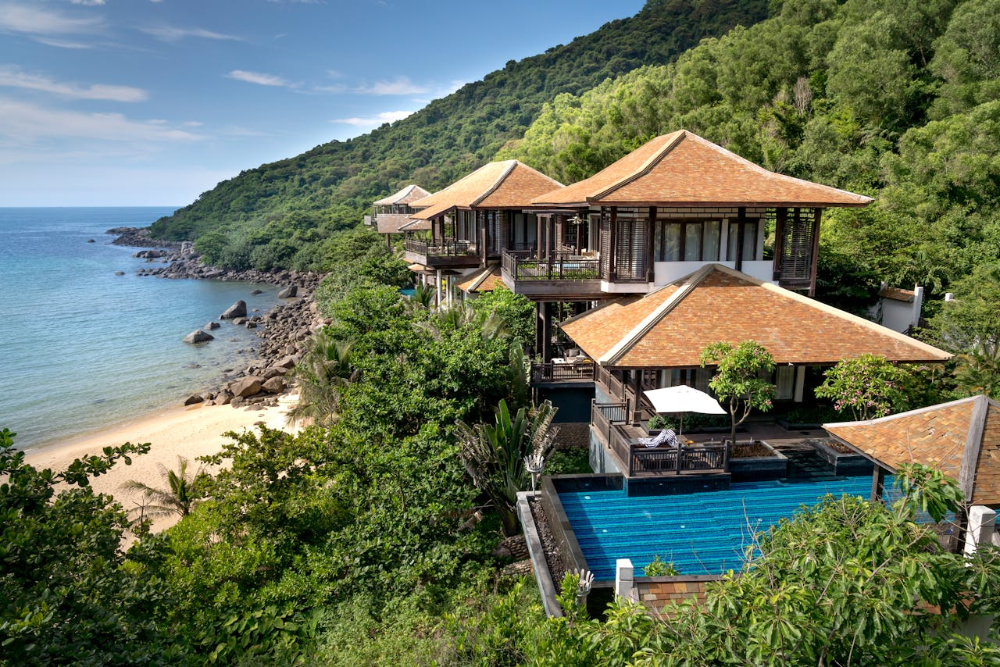
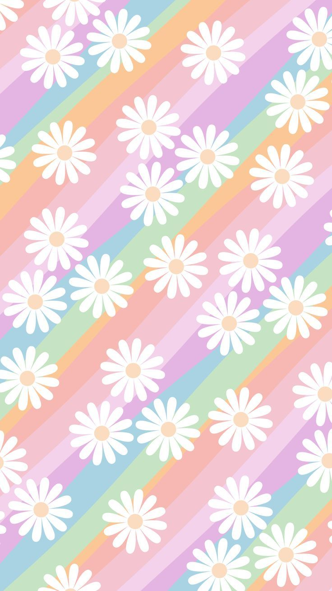
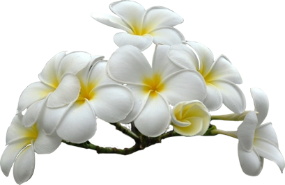
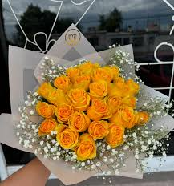

Imágen simple
Las cabañas en Tahití son alojamientos que pueden ser una buena opción para quienes buscan desconectarse de la ciudad y disfrutar de la naturaleza. En Airbnb se pueden encontrar bungalows en Tahití con buenas calificaciones por su ubicación y limpieza. Tahití es la isla más grande de la Polinesia Francesa, un territorio de ultramar francés ubicado en el sur del océano Pacífico. Es conocida por sus cálidas aguas, selvas exuberantes, resorts lujosos y cocina francesa. Para viajar a Tahití, se necesita un pasaporte válido con una vigencia de al menos 6 meses después del final del viaje. La época de lluvias o verano austral, de noviembre a abril, es la menos recomendable para visitar Tahití.
Imagen gift
El francés y el tahitiano son las dos lenguas oficiales que se hablan en la Polinesia Francesa.
Varias palabras han pasado a formar parte de la conversación cotidiana de los angloparlantes, y varias expresiones se han convertido en habituales, como aita ‘e pe’ape’a, que significa que todo va bien. La palabra popa’a es muy común y significa “extranjero”. El francés es la lengua oficial, pero ¿por qué no aprender algunas palabras en tahitiano?
Para saludar : ¡’Ia ora na! A lo cual se contesta: ¿‘E aha tō ‘oe huru?, que significa “¿Cómo estás?”. Puedes responder : Maita ‘i (¡Bien!), Maita’i roa (¡Muy bien!) o Maita’i ri’i (Nada mal).
“Gracias”, se dice Māuruuru. Para decir “no, gracias”: ‘aita māuruuru y “muchas gracias” se dice ¡Māuruuru roa!
“Hasta luego” se dice: ¡Nānā! (Hasta que nos volvamos a ver).
Imagenes flotantes
 Las flores son algo más que un "ornamento de la naturaleza"; son un elemento central de la civilización humana. En el mundo polinesio, que incluye lugares exóticos como Rapa NuiEn Hawai y Tahití, las flores no sólo encarnan la gracia estética, sino que también tienen un significado cultural y espiritual que sigue vivo hoy en día. Las islas polinesias, especialmente Tahití, son un auténtico paraíso floral. Su variada flora, rica en colores y seductoras fragancias, cautiva a viajeros de todo el mundo.
Gracias al clima ideal, aquí prosperan especies vegetales tanto endémicas como introducidas. Son parte integrante del mito de estas islas encantadoras que cautivan la imaginación de la gente.
Especies como el Ti o también llamado Auti (Cordyline fruticosa), Tipanie (Plumeria o Frangipani), Bougainvillea, Ave del Paraíso (Strelitzia reginae), Opuhi (Zingiber zerumbet) y por supuesto el Tiare (Gardenia tahitensis), cada una de ellas sorprende por su aspecto y fragancia única.
Una de las tradiciones más hermosas es la creación de collares de flores, también conocidos como "hei" o "lei". Estas obras de arte florales las lucen tanto lugareños como turistas y permiten una conexión directa con el mágico mundo de la Polinesia.
El Tiare Tahití o "flor de Tahití" es el símbolo nacional de la Polinesia Francesa y también se encuentra en la mayoría de las demás islas del Pacífico. Esta flor es más que una planta, es un símbolo de la vida y la cultura polinesias. Las mujeres ("vahine") suelen llevar la flor abierta en la oreja, mientras que los hombres ("tane") llevan un capullo detrás de la oreja. Además, la posición de la flor da información sobre el estado sentimental de quien la lleva. En lengua tahitiana, la flor de tiaré tiene 10 nombres distintos según su grado de madurez y se utiliza para diversos remedios tradicionales. Sin embargo, el uso más conocido en todo el mundo es sin duda el famoso Monoï de Tahití.
Es un aceite muy suave que tiene muchos usos, desde el cuidado de la delicada piel de Bebés desde el nacimiento hasta el cuidado de la piel y el cabello de personas de todas las edades. Sin olvidar, por supuesto, su uso más famoso: conseguir un bonito bronceado dorado en la piel al tomar el sol.
La flor de tiaré y sus hojas no sólo son un símbolo cultural, sino que también se utilizan en numerosos ámbitos del bienestar, por ejemplo en diversas formas de "Ra'au Tahiti" (masaje tradicional polinesio). En la Polinesia, las flores no son sólo un regalo para la vista, sino una parte viva de la cultura y la vida cotidiana.
Imágenes de fondo
La Polinesia Francesa se encuentra cercana a las islas Cook por el oeste, Kiribati al noroeste y las islas Pitcairn al este. Pese a su lejanía, la Polinesia Francesa se ha convertido en un importante destino turístico, atrayendo a miles de personas que quieren disfrutar de sus hermosas playas y exhuberante naturaleza.
Tahití es la isla principal de la Polinesia Francesa y está ubicada en el Pacífico Sur. El paisaje salvaje es resultado de la erupción de un volcán ya extinto, situado en el centro de la isla, el monte Orohena. Es famosa por sus playas de arena negra donde se practica surf todo el año como las de Teahupoo. Éstas están franqueadas a un lado por grandes montañas de verdor intenso y al otro, por una laguna limitada por el arrecife de coral.
Imagen con vínculo
La dazan tahitiana. Originalmente Ori Tahiti es el arte del movimiento de una civilización de tradición oral. El único elemento de este arte que ha sobrevivido más de dos siglos de historia turbulenta es la conexión directa e íntima entre el lenguaje oral y los movimientos de baile. Por lo tanto, el fundamento de la danza tahitiana sigue siendo el vínculo directo entre el idioma tahitiano y el arte coreográfico. Ciertamente, no es lo que el público recuerda sino los movimientos más característicos de la danza, el vestuario, la música, el canto y la percusión, o sea que es la alegría de la danza que marcan los espíritus. Para saber más pueder presionar la flecha.

Imagen con filtro
En nuestra cultura, la rosa amarilla es la ideal para transmitir unos valores íntimamente ligados con la amistad. Simbolizan energía, optimismo y alegría: tres valores que se asocian a esas personas que son compañeras de vida. Sin embargo, hay que tener mucho cuidado cuando las regalamos. Por buenas intenciones que tengamos si su destinatario es italiano, alemán, ruso o chino las rosas amarillas pueden suponer un malentendido. Mientras para los últimos son flores ligadas a ritos funerarios, para los tres primeros es un color visto con malos ojos. No olvidemos tampoco a los supersticiosos y a los artistas. En ambos casos, el amarillo no es precisamente su color favorito por buenos amigos que sean.
Conviene conocer el significado del color de las rosas si con ellas buscamos transmitir una emoción concreta. Y es que, aunque pensemos que su tonalidad no influye, lo cierto es que es decisiva para expresar nuestras intenciones pero, sobre todo, para acertar a hacerlo en cada ocasión.
